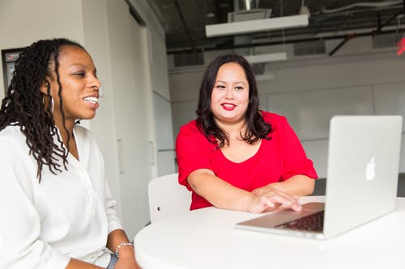

FREE MENTOR maintains the Mentoring Connector, the only national database of youth mentoring programs connecting volunteers to opportunities in their local communities.
Browse MentorsLooking for a mentor?
Featured upcoming sessions:
-
 Corner office
Nice girls don't get the corner office. A mentoring session by Lois P Frankel.
View SessionBY: LOIS P FRANKEL -
Braving the Wilderness
The Quest for True Belonging and the Courage to Stand Alone
View sessionBY: BRENE BROWN -

confidence code
Confidence. We want it. We need it. But it can be maddeningly enigmatic and out of reach.
View sessionBY: KATTIE KAY